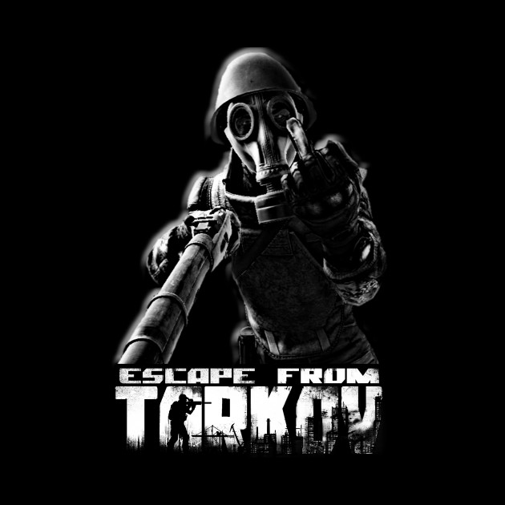

Tarkov
Az Escape from Tarkov egy kemény és reális online first person akció-RPG, MMO funkciókkal, amelyeket az orosz szentpétervári székhelyű játékfejlesztő, a Battlestate Games fejlesztett ki. A kitalált Norvinsk régióban, az Oroszország és Európa közötti határon elhelyezkedő Tarkov metropolisz a Szerződés Háborúinak köszönhetően anarchiába zuhant. A korábban nyüzsgő város volt, amelyet rivális versenytársak, a korábbi magán katonai erők és a fekete ops egységek csapnak fel. Közöttük van a rejtekhelyed, és a menekülés a szabad világba Tarkov mélyéből.
A tarkov saját weboldala
|

|